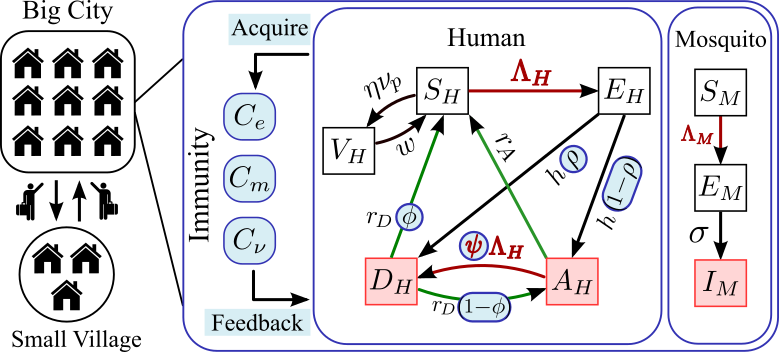
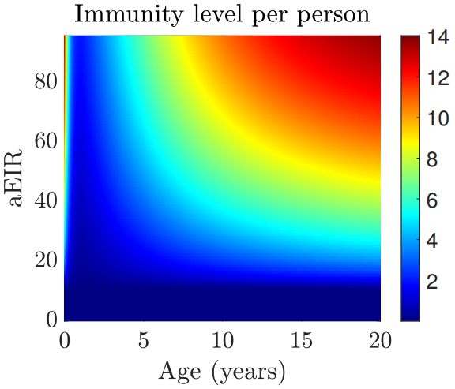
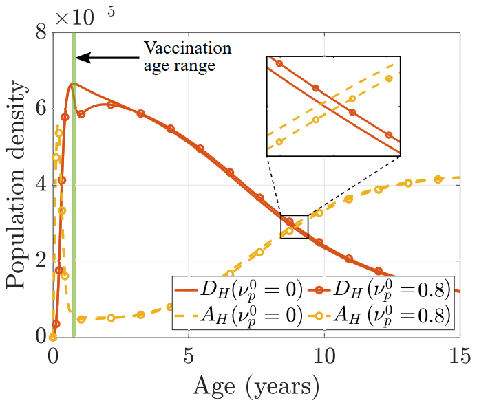

Zhuolin Qu
Modeling malaria immunity
Malaria is one of the deadliest
infectious diseases globally, causing hundreds of
thousands of deaths each year. It disproportionately
affects young children, with two-thirds of fatalities
occurring in under-fives. Individuals acquire protection
from disease through repeated exposure, and this immunity
plays a crucial role in the dynamics of malaria
spread.
Age-structured PDE model: vector-host epidemiological dynamics + immunity dynamics

Figure: Schematic of the immuno-epidemiological
model that couples the human-mosquito transmission
dynamics with immunity dynamics. It also captures the
corresponding feedback on the epidemiological parameters
(in blue circles: rho, phi, psi).


Left: The model characterized the heterogeneity in immunity profiles, which depend on age and malaria transmission level (aEIR) in the region. Right: Preliminary case study of applying RTS,S vaccine in Kenya. Vaccination lowers the severe disease cases before 3 y.o. and slightly increases that number for older ages.
Collaborators
Lauren Childs,
Virginia Tech
Christina
Edholm, Scripps College
Denis
Patterson, Durham University
Joan Ponce,
Arizona State University
Olivia
Prosper, University of Tennessee, Knoxville
Lihong Zhao,
Virginia Tech
Related Publications
-
Zhuolin Qu*, Denis Patterson*, Lihong Zhao, Joan Ponce, Christina Edholm, Olivia Feldman, and Lauren Childs
Mathematical modeling of malaria vaccination with seasonality and immune feedback *denotes equal contribution
PLOS Computational Biology (2025), 21(5); e1012988 -
Zhuolin Qu*, Denis Patterson*, Lauren Childs, Christina Edholm, Joan Ponce, Olivia Prosper, and Lihong Zhao
Modeling Immunity to Malaria with an Age-Structured PDE Framework *denotes equal contribution
SIAM Journal on Applied Mathematics, 83.3, (2023), 1098-1125.